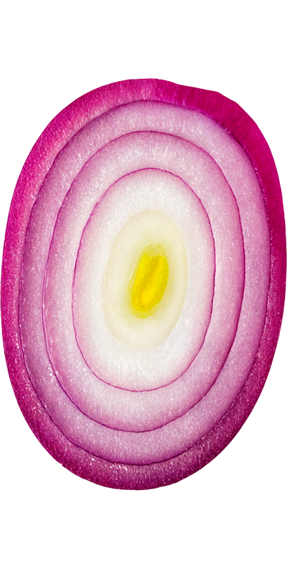
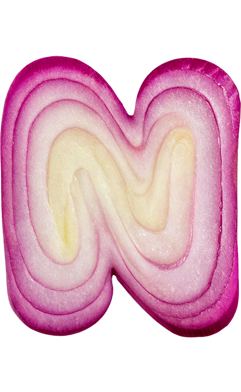

<!doctype html><html lang="zh-CN"><meta charset="utf-8"><meta name="viewport" content="width=device-width,initial-scale=1"><title>洋葱切分实验室 · Pudding study</title><link rel="stylesheet" href="style.css"><script src="assets/d3.min.js"></script><script src="assets/paper-full.min.js"></script><script type="module" src="app.js"></script>
<main><header><a href="../../">← 备选库</a><span>THE PUDDING / SOURCE STUDY 06</span><a href="https://pudding.cool/2025/08/onions/" target="_blank" rel="noreferrer">原作 ↗</a></header><section class="intro"><div><div class="letters" aria-label="ONION"></div><h1>刀尖向下，切得更均匀？</h1></div><p>一颗洋葱，四种切法。调整刀线的汇聚点，再把碎块散开，看看大小差异。<small>原作的二维剖面模型 · 用面积比较，不代表真实体积</small></p></section>
<nav aria-label="切法预设"><button data-preset="vertical" aria-pressed="true"><b>01</b> 垂直切</button><button data-preset="center" aria-pressed="false"><b>02</b> 朝向圆心</button><button data-preset="below" aria-pressed="false"><b>03</b> 向下 60%</button><button data-preset="optimal" aria-pressed="false"><b>04</b> 向下 96%</button></nav>
<section class="lab"><aside><div class="metric"><span>碎块面积的相对标准差</span><output id="rsd">—</output><small>数值越低，大小越接近。</small></div><label>洋葱层数 <output id="layers-out">10</output><input id="layers" type="range" min="7" max="13" value="10"></label><label>切分数（右半剖面） <output id="cuts-out">10</output><input id="cuts" type="range" min="1" max="10" value="10"></label><fieldset><legend>切法</legend><label><input type="radio" name="type" value="vertical" checked> 垂直</label><label><input type="radio" name="type" value="radial"> 放射</label></fieldset><label>汇聚点深度 <output id="depth-out">0%</output><input id="depth" type="range" min="0" max="100" value="0" disabled><small>以洋葱半径为 100%，向砧板下方移动。</small></label><div class="buttons"><button id="explode" aria-pressed="false">散开碎块 ↗</button><button id="reset">重置</button></div></aside><figure><div class="figure-top"><span id="view-label">完整剖面 / 只分析对称的右半边</span><span id="count"></span></div><svg id="diagram" viewBox="-300 0 600 560" role="img" aria-label="洋葱切分剖面"></svg><figcaption id="caption" aria-live="polite"></figcaption></figure></section><footer>原作 Andrew Aquino · Russell Samora · Jan Diehm / 原 PNG 字母、原面积模型与 Paper.js 路径求交。<a href="REVIEW.md">复核记录</a> · 待用户 review</footer></main></html>
